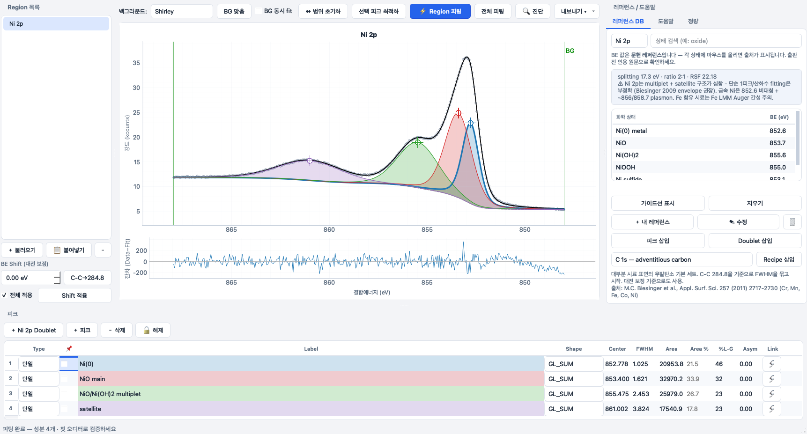

PikaXPS 화면. 그림을 누르면 크게 보입니다.
XPS 피크 피팅 · macOS · Windows
PikaXPS
X선 광전자 분광(XPS) 스펙트럼의 피크 피팅 프로그램입니다. XPSPEAK 4.1을 대신할 무료 도구로, 피팅 결과의 문제를 짚어 주는 감사 기능과 문헌 출처가 달린 참조 데이터베이스가 들어 있습니다.
- 피크 개수 제한 없음, 계정 없음, 파이썬 설치 불필요
- 피팅 감사(fit auditor): 피팅 결과의 문제를 자동으로 짚어 줍니다
- 참조 데이터베이스: 결합 에너지 값마다 문헌 출처를 표시합니다
- macOS(Apple Silicon)와 Windows, GPLv3 오픈소스
설치 메모
Windows zip을 풀고 PikaXPS.exe를 실행합니다. 코드 서명이 없는 프로그램이라 처음에 SmartScreen 경고가 뜨면 "추가 정보 → 실행"을 누릅니다.
macOS dmg를 열어 PikaXPS를 응용 프로그램 폴더에 끌어 넣고, 처음 한 번은 우클릭 → 열기로 실행합니다. "손상되었다"는 메시지가 나오면 터미널에서 xattr -cr /Applications/PikaXPS.app을 실행합니다.